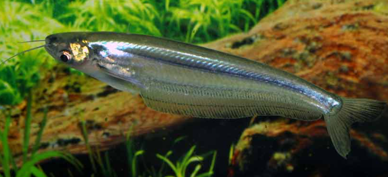

Systématique
- Ordre : Siluriformes
- Famille : Siluridae
- Genre : Kryptopterus
- Espèce : K. geminus

Kryptopterus geminus est un siluridé d'Asie du Sud-Est décrit en 2003 par l'ichtyologiste Ng. Son épithète spécifique geminus (signifiant "jumeau" ou "né en même temps") fait référence à sa ressemblance frappante avec l'espèce Kryptopterus cryptopterus, avec laquelle il a longtemps été confondu.
Il mesure environ 15 à 17 cm à l'âge adulte. Contrairement au silure de verre d'aquarium (K. vitreolus), il n'est pas transparent mais présente un corps opaque à translucide, de couleur jaunâtre ou argentée. Il se distingue de K. cryptopterus par une tête au profil dorsal plus plat (moins concave), un museau plus court et des yeux proportionnellement plus petits.
Comme les autres membres du genre, sa nageoire dorsale est réduite à un simple rayon vestigial, souvent difficile à percevoir, tandis que la nageoire anale est très longue.
C'est une espèce pélagique (de pleine eau) et grégaire qui doit être maintenue en bancs importants pour limiter le stress.
Il nage généralement en position oblique, la tête vers le haut, en ondulant la nageoire anale. C'est un prédateur actif qui se nourrit de petits poissons et d'invertébrés. En aquarium, sa taille et son régime alimentaire le rendent incompatible avec les petites espèces (Tétras, Rasboras, crevettes) qu'il considère comme de la nourriture.
Mode : ovipare.
Aucune information disponible sur la reproduction en captivité. Dans la nature, c'est une espèce potamodrome qui effectue des migrations saisonnières pour frayer dans les plaines inondées durant la saison des pluies.
Dimorphisme sexuel : Aucune information fiable disponible pour distinguer les sexes visuellement, en dehors d'un embonpoint probable des femelles gravides.
Espérance de vie : Estimée à environ 5 à 8 ans, basés sur les données d'espèces proches de taille similaire.
Il est originaire d'Asie du Sud-Est continentale. On le trouve dans les grands bassins fluviaux du Mékong, du Chao Phraya, du Mae Klong et du Bang Pakong.
Il habite principalement les grandes rivières aux eaux souvent turbides (boueuses) et à courant lent à modéré. Il pénètre également dans les zones inondées (champs, forêts) lors des crues.
Répartition

Origine naturelle :
- Asie du Sud-Est.
- Thaïlande.
- Laos.
- Cambodge.
- Vietnam (Delta du Mékong).
Paramètres de maintenance
Température : 23 à 28 °C.
pH : 6,0 à 7,5.
GH : 5 à 15 °dGH.
Volume conseillé : Minimum 400 à 500 L. En raison de sa taille adulte (17 cm) et de son besoin de vivre en groupe (banc), il nécessite un grand volume de nage libre.
Régime alimentaire
Régime : carnivore / piscivore.
Dans la nature, il consomme des crustacés, des insectes et des poissons plus petits.
En aquarium, il nécessite une alimentation riche : proies vivantes ou congelées de taille adaptée (vers de terre, crevettes, chair de moule, petits poissons d'alimentation), et granulés pour carnivores.